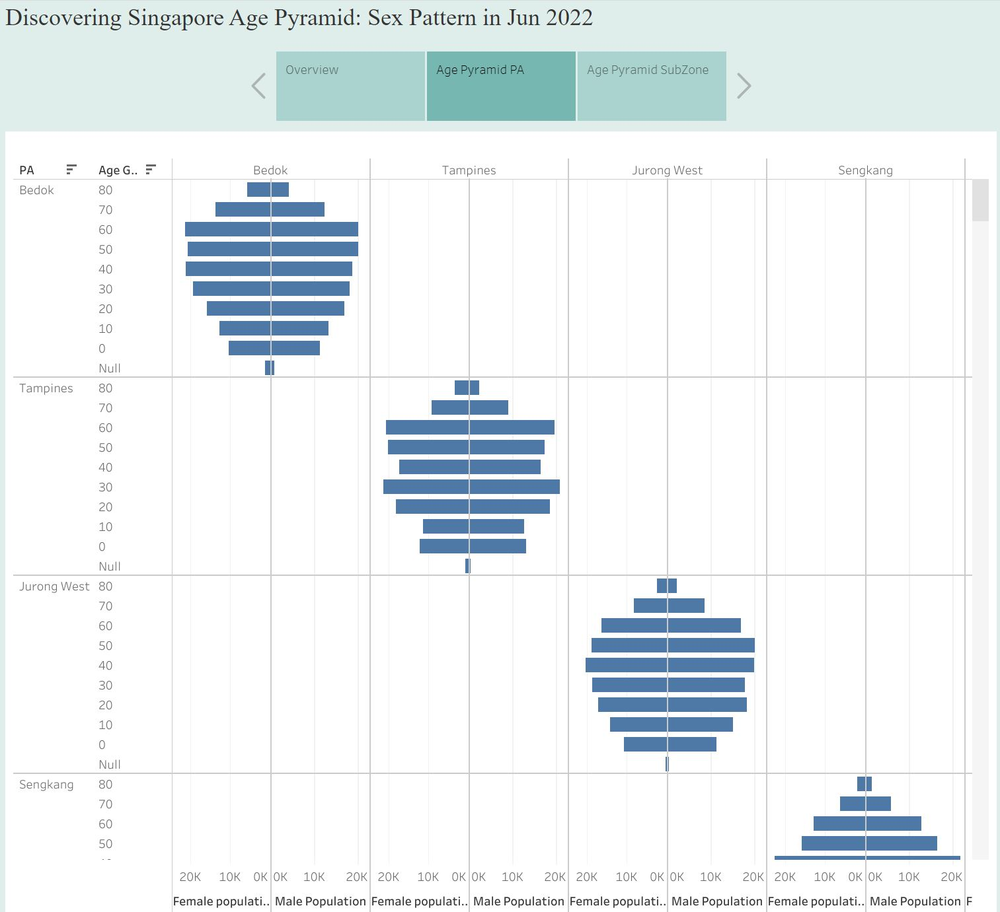
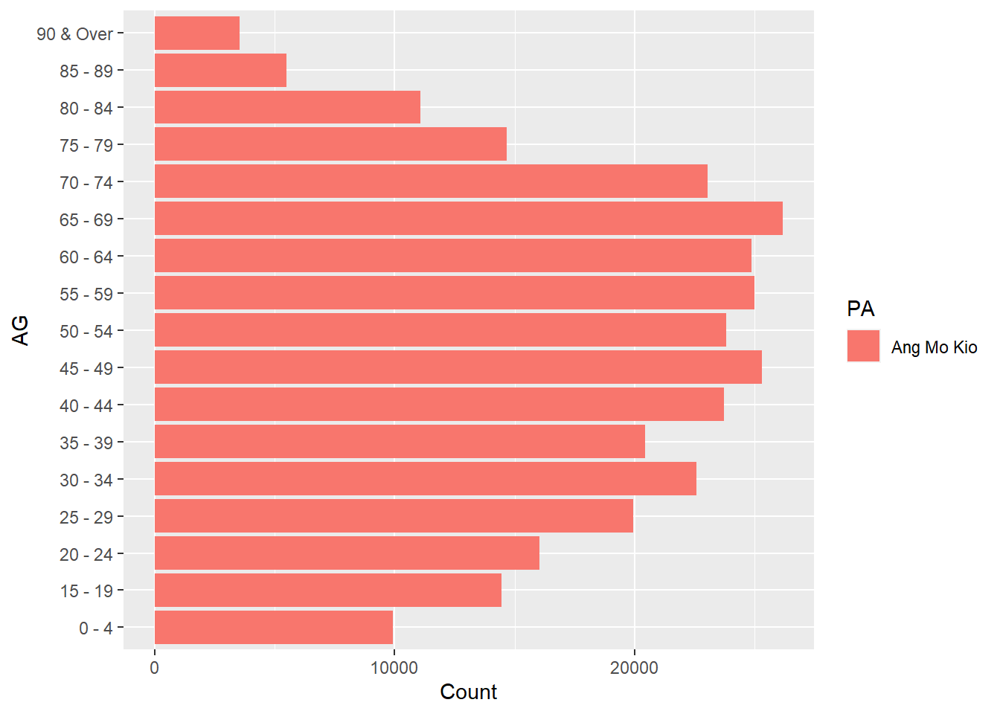
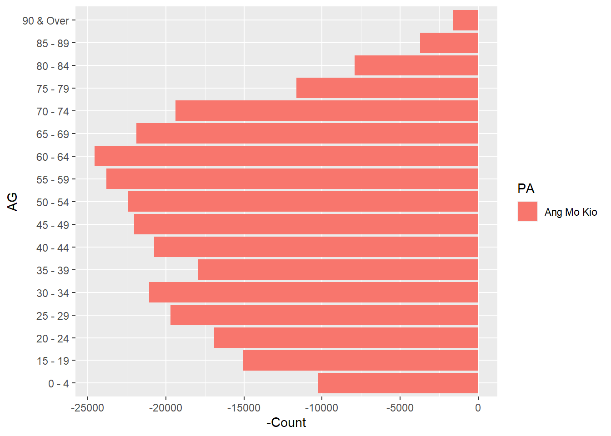
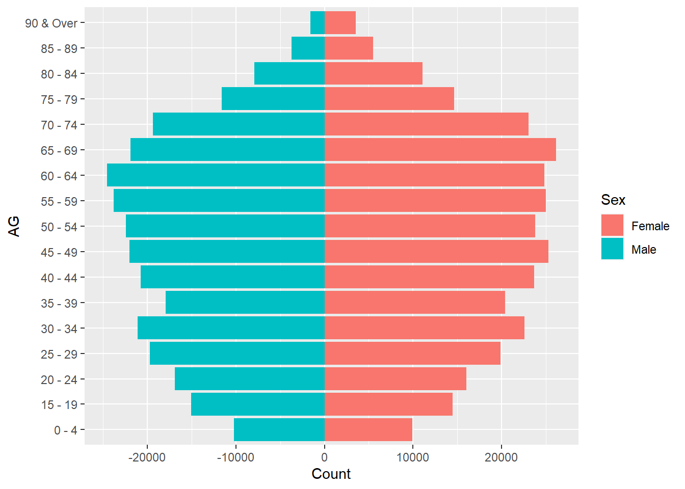
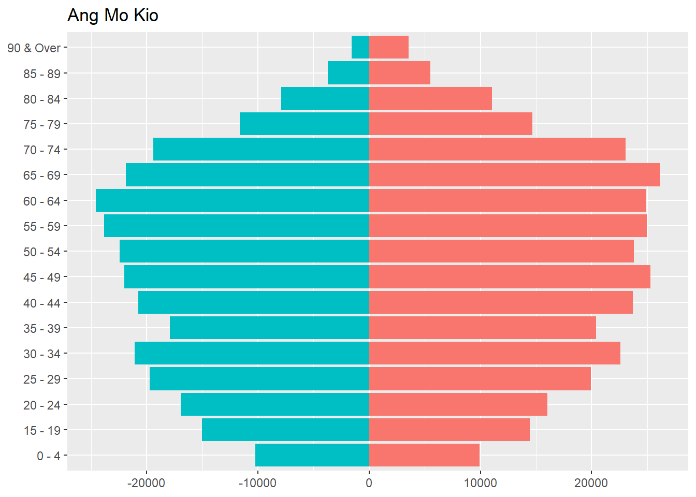
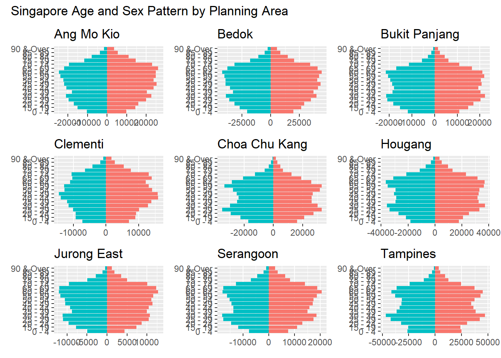

Show the code
pacman::p_load(tidyverse)For this Take-Home Exercise 2, I would like to introduce how we can make the visualization of take-home exercise 1 better in terms of clarity and aesthetics.
For a recap, exercise 1’s task was to create a trellis chart of age & gender pyramids in 9 selected planning areas.

Although this visualization has managed to plot pyramids by different planning area, there are still some rooms to improve to make it look better!
Clarity
From the perspective of the audience who first read this chart, they may not be familiar with the terms used in the chart. Therefore, it would be desirable to spell out acronyms, such as “Planning Area” instead of “PA”. In addition, title can also be improved to deliver the original intention of the task. For example, simple and clear title such as “Singapore’s Age and Sex Pattern by Planning Area” could be good enough. Last but not least, adding footnotes or descriptions to make the chart more understandable could be another way to improve the clarity of this visualization.
Aesthetics
There are mainly two issues with this visualization: First, it is hard to tell female and male bars from each pyramid. Second, repeated labels make the visualization less readable. In this article, I will suggest an improved visualization by using ggplot and tidyverse.
First, start from loading tidyverse and importing dataset.
pacman::p_load(tidyverse)In this task, I used Singapore Residents by Planning Area / Subzone, Age Group, Sex and Type of Dwelling, June 2022 published by Department of Statistics, Singapore.
I removed null data and wrong category from the csv file, and rebinded male and female dataset.
# prepare cleaned data
male_pop <- read_csv("data/Male_Pop_June_2022.csv")Rows: 24003 Columns: 7
── Column specification ────────────────────────────────────────────────────────
Delimiter: ","
chr (5): Sex, PA, Subzone, AG, Floor Area
dbl (1): Time
num (1): Population
ℹ Use `spec()` to retrieve the full column specification for this data.
ℹ Specify the column types or set `show_col_types = FALSE` to quiet this message.female_pop <- read_csv("data/Female_Pop_June_2022.csv")Rows: 24228 Columns: 7
── Column specification ────────────────────────────────────────────────────────
Delimiter: ","
chr (5): Sex, PA, Subzone, AG, Floor Area
dbl (1): Time
num (1): Population
ℹ Use `spec()` to retrieve the full column specification for this data.
ℹ Specify the column types or set `show_col_types = FALSE` to quiet this message.# removed null data, wrong category
# bind and inspect data
total_pop <- rbind(male_pop, female_pop)
Then, need to aggregate and leave necessary columns only for easier analysis.
freq_pop <- total_pop %>%
group_by(`Sex`, `AG`, `PA`) %>%
summarise('Count'= sum(`Population`)) %>%
ungroup()`summarise()` has grouped output by 'Sex', 'AG'. You can override using the
`.groups` argument.
In this practice, I chose Ang Mo Kio, Bedok, Bukit Panjang, Clementi, Choa Chu Kang, Hougang, Jurong East, Serangoon, and Tampines. Here are steps to improve visualization, with Ang Mo Kio example.
Ang Mo Kio
Filter the dataset by PA == “Ang Mo Kio”, then see how the plot looks like with female dataset.
# get AMK first
amk_pop <- freq_pop %>%
filter(PA == "Ang Mo Kio")
amk_pop_female <- freq_pop %>%
filter(Sex == "Female", PA == "Ang Mo Kio")
ggplot(amk_pop_female,
aes(x = Count,
y = AG,
fill = PA)) +
geom_col()
Let’s see how to plot male data. You may use convert the x axis in negative value to switch the axis direction.
amk_pop_male <- freq_pop %>%
filter(Sex == "Male", PA == "Ang Mo Kio")
ggplot(amk_pop_male,
aes(x = -Count,
y = AG,
fill = PA)) +
geom_col()
Now, let’s put them together and see how age & sex pyramid looks like.
amk_pyramid <- amk_pop %>%
mutate(
Count = case_when(
Sex == "Male" ~ -Count,
TRUE ~ Count
))
amk_plot <-
ggplot(amk_pyramid,
aes(x = Count,
y = AG,
fill = Sex)) +
geom_col()
amk_plot # to get the final pyramid
As we will need to put each chart together, let’s remove overlapping labels and legend.
amk_plot <-
ggplot(amk_pyramid,
aes(x = Count,
y = AG,
fill = Sex), show.legend=FALSE) +
geom_col() +
theme(axis.title.x = element_blank(),
axis.title.y = element_blank(),
legend.position = "none") +
ggtitle("Ang Mo Kio")
amk_plot
Similarly, you can create 8 other plots using the same method. In this practice, I chose Bedok, Bukit Panjang, Clementi, Choa Chu Kang, Hougang, Jurong East, Serangoon, and Tampines.
Bedok
# Bedok
bedok_pop <- freq_pop %>%
filter(PA == "Bedok")
bedok_pyramid <- bedok_pop %>%
mutate(
Count = case_when(
Sex == "Male" ~ -Count,
TRUE ~ Count
))
bedok_plot <-
ggplot(bedok_pyramid,
aes(x = Count,
y = AG,
fill = Sex), show.legend=FALSE) +
geom_col() +
theme(axis.title.x = element_blank(),
axis.title.y = element_blank(),
legend.position = "none") +
ggtitle("Bedok")Bukit Panjang
# Bukit Panjang
bk_pj_pop <- freq_pop %>%
filter(PA == "Bukit Panjang")
bk_pj_pyramid <- bk_pj_pop %>%
mutate(
Count = case_when(
Sex == "Male" ~ -Count,
TRUE ~ Count
))
bk_pj_plot <-
ggplot(bk_pj_pyramid,
aes(x = Count,
y = AG,
fill = Sex), show.legend=FALSE) +
geom_col() +
theme(axis.title.x = element_blank(),
axis.title.y = element_blank(),
legend.position = "none") +
ggtitle("Bukit Panjang")Clementi
# Clementi
clementi_pop <- freq_pop %>%
filter(PA == "Clementi")
clementi_pyramid <- clementi_pop %>%
mutate(
Count = case_when(
Sex == "Male" ~ -Count,
TRUE ~ Count
))
clementi_plot <-
ggplot(clementi_pyramid,
aes(x = Count,
y = AG,
fill = Sex), show.legend=FALSE) +
geom_col() +
theme(axis.title.x = element_blank(),
axis.title.y = element_blank(),
legend.position = "none") +
ggtitle("Clementi")Choa Chu Kang
# Choa Chu Kang
cck_pop <- freq_pop %>%
filter(PA == "Choa Chu Kang")
cck_pyramid <- cck_pop %>%
mutate(
Count = case_when(
Sex == "Male" ~ -Count,
TRUE ~ Count
))
cck_plot <-
ggplot(cck_pyramid,
aes(x = Count,
y = AG,
fill = Sex), show.legend=FALSE) +
geom_col() +
theme(axis.title.x = element_blank(),
axis.title.y = element_blank(),
legend.position = "none") +
ggtitle("Choa Chu Kang")Hougang
# Hougang
hougang_pop <- freq_pop %>%
filter(PA == "Hougang")
hougang_pyramid <- hougang_pop %>%
mutate(
Count = case_when(
Sex == "Male" ~ -Count,
TRUE ~ Count
))
hougang_plot <-
ggplot(hougang_pyramid,
aes(x = Count,
y = AG,
fill = Sex), show.legend=FALSE) +
geom_col() +
theme(axis.title.x = element_blank(),
axis.title.y = element_blank(),
legend.position = "none") +
ggtitle("Hougang") Jurong East
# Jurong East
jr_est_pop <- freq_pop %>%
filter(PA == "Jurong East")
jr_est_pyramid <- jr_est_pop %>%
mutate(
Count = case_when(
Sex == "Male" ~ -Count,
TRUE ~ Count
))
jr_est_plot <-
ggplot(jr_est_pyramid,
aes(x = Count,
y = AG,
fill = Sex), show.legend=FALSE) +
geom_col() +
theme(axis.title.x = element_blank(),
axis.title.y = element_blank(),
legend.position = "none") +
ggtitle("Jurong East")Serangoon
# Serangoon
srgoon_pop <- freq_pop %>%
filter(PA == "Serangoon")
srgoon_pyramid <- srgoon_pop %>%
mutate(
Count = case_when(
Sex == "Male" ~ -Count,
TRUE ~ Count
))
srgoon_plot <-
ggplot(srgoon_pyramid,
aes(x = Count,
y = AG,
fill = Sex), show.legend=FALSE) +
geom_col() +
theme(axis.title.x = element_blank(),
axis.title.y = element_blank(),
legend.position = "none") +
ggtitle("Serangoon")Tampines
# Tampines
tamp_pop <- freq_pop %>%
filter(PA == "Tampines")
tamp_pyramid <- tamp_pop %>%
mutate(
Count = case_when(
Sex == "Male" ~ -Count,
TRUE ~ Count
))
tamp_plot <-
ggplot(tamp_pyramid,
aes(x = Count,
y = AG,
fill = Sex), show.legend=FALSE) +
geom_col() +
theme(axis.title.x = element_blank(),
axis.title.y = element_blank(),
legend.position = "none") +
ggtitle("Tampines")Now we have 9 separate pyramids, let’s put them in one view using patchwork.
You may use following code to download patchwork package.
devtools::install_github(“thomasp85/patchwork”)
library(ggplot2)
library(patchwork)Once you have patchwork ready, you can put 9 pyramids together, and add title!
patchwork <- (amk_plot | bedok_plot | bk_pj_plot)/
(clementi_plot | cck_plot | hougang_plot)/
(jr_est_plot | srgoon_plot | tamp_plot)
patchwork + plot_annotation(
title = 'Singapore Age and Sex Pattern by Planning Area')
In this exercise, the initial visualization has been improved in terms of clarity and aesthetics by:
Adding appropriate title and planning area
Separating female and male with different colors for easier comparison
Removing axis title for cleaner view
Putting 9 pyramid plots in 1 view